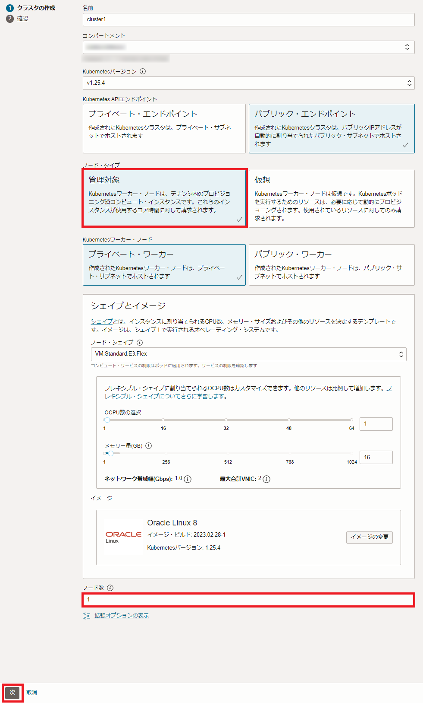
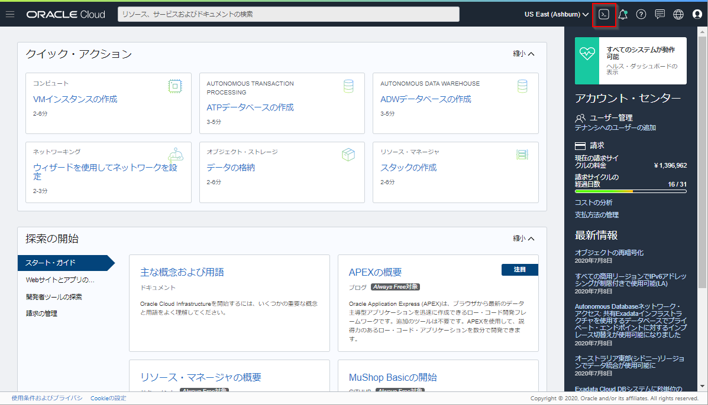

マネージドKubernetesサービスであるOralce Container Engine for Kubernetes(OKE)を中心とした、コンテナ・ネイティブなサービス群です。
Oracle Container Engine for Kubernetes（以下OKE）は、OracleのマネージドKubernetesサービスです。この共通手順では、OCIやOKEを操作するためCLI実行環境の構築（Resource Managerを使用）と、OKEを使ってKubernetesクラスターをプロビジョニングするまでの手順を記します。
前提条件
- クラウド環境
- Oracle Cloudのアカウントを取得済みであること
ハンズオン環境のイメージ

1.OKEクラスターのプロビジョニング
ここでは、OKEクラスターのプロビジョニングを行います。ここでの手順を実施することにより、OKEのコントロールプレーンとKubernetesクラスターの構築が同時に行われます。

はじめに、OCIコンソール画面左上のハンバーガーメニューを展開し、開発者サービス⇒Kubernetes Clusters (OKE)を選択します。

クラスタ一覧画面で、クラスタの作成をクリックします。

次のダイアログでクイック作成を選択し、ワークフローの起動をクリックします。

次のダイアログで、任意の名前を入力し、バージョンを選択します。ここではデフォルトのまま進めていきます。
Kubernetes APIエンドポイントには今回はデフォルトのパブリック・エンドポイントを選択します。
Kubernetes APIエンドポイントについて
管理者は、クラスタのKubernetes APIエンドポイントを、プライベート・サブネットまたはパブリック・サブネットに構成することができます。
VCNルーティングとファイアウォール・ルールを使うことで、Kubernetes APIエンドポイントへのアクセスを制御し、オンプレミスもしくは同一VCN上に構築した踏み台サーバからのみアクセス可能にすることができます。
Kubernetesワーカー・ノードには今回プライベートを選択します。これは、
ワークロードに応じて、ワーカーノードにパブリックIPを付与する必要がある場合は、パブリックを選択してください。
Kubernetesワーカー・ノードについて
プライベートかパブリックによって、ワーカーノードに付与されるIPアドレスの種類が変わります。
プライベートは、ワーカーノードがプライベートIPのみを付与された状態でプロビジョニングを行います。
ワーカーノードにパブリックIPを付与する必要がある場合は、パブリックを選択してください。
シェイプには、今回VM.Standard.E3.Flexを選択します。
このシェイプは、OCPUとメモリ(RAM)を柔軟に変更することができるようになっています。
今回は、1oCPU/16GBで作成します。
シェイプについて
OKEでは、VM、ベアメタル、GPU、HPCなどの様々なシェイプをご利用頂くことができます。
また、プロセッサ・アーキテクチャとしても、Intel/AMD/ARMベースのインスタンスから選択頂くことができます。
ワークロードに応じて、適切なシェイプを選択してください。
ノードの数はワーカーノードの数を指定します。デフォルトで「3」が指定されていますが、本ハンズオンでは最小構成である「1」に変更してください。
ノード数について
ノードはリージョン内の可用性ドメイン全体（または、東京リージョンなど単一可用性ドメインの場合、その可用性ドメイン内の障害ドメイン全体）に可能な限り均等に分散されます。
実運用の際は可用性を考慮し、適切なノード数を指定してください。
そして、ダイアログの下まで移動し次をクリックします。

次のダイアログは入力内容を確認し、クラスタの作成をクリックします。

デフォルトの設定では、クラスタが必要とするネットワークリソース等の構成が自動的に行われます。途中経過がダイアログに表示されますので、「クラスタと関連ネットワーク・リソースが作成されました」というメッセージが表示されるまで待った後、Closeボタンをクリックします。
クラスタの詳細画面表示されたら、クラスタ・ステータスに表示される内容を確認してください。この時点では作成中と表示されますが、プロビジョニングが完了するとアクティブとなります（完了までにはおおよそ5～10分程度かかります）。
この後の進め方について
クラスタが完成するまでの間に次章「3 . CLI実行環境(Cloud Shell)の準備」の手順を進めてください。
2.CLI実行環境(Cloud Shell)の準備
つぎにOKEクラスターなどのCLIを実行するための環境を準備します。

本ハンズオンではOKEクラスターを操作するいくつかのCLIを実行するための環境としてCloud Shellと呼ばれるサービスを使用します。 Cloud ShellはOracle CloudコンソールからアクセスできるWebブラウザベースのコンソールです。 Cloud Shellには、OCI CLIをはじめとして、次のようないくつかの便利なツールおよびユーティリティの現在のバージョンがインストールされています。 詳細は、公式ドキュメントの記載をご確認ください。
| インストール済みツール |
|---|
| Git |
| Java |
| Python (2および3) |
| SQL Plus |
| kubectl |
| helm |
| maven |
| gradle |
| terraform |
| ansible |
Cloud Shellついて
Cloud Shellは開発専用ではなく、一時的にOCIコマンドを実行したい場合などライトなご利用を想定したサービスであるため、実運用時はCLI実行環境を別途ご用意ください。
OCIコンソール上で右上にあるターミナルのアイコンをクリックします。

しばらく待つと、Cloud Shellが起動されます。

必要なCLIはこの時点でインストール済みですので、例えば以下のようなコマンドを実行することが可能です。
kubectl version --client --short
以下のような結果となれば、kubectlは正常にインストールされています。
Client Version: vX.XX.X
上記は、kubectl（Kubernetesの管理用のコマンドラインツール）の、バージョン情報を表示するコマンドとその結果です。
以上で、準備作業は完了です。
3.kubectlのセットアップ

次に、kubectlのセットアップを行って実際にクラスターにアクセスしてみます。
OCIコンソール画面左上のハンバーガーメニューを展開し、開発者サービス⇒Kubernetes Clusters (OKE)を選択します。
先の手順で作成しておいたcluster1の名前をクリックします。

ここからの手順について
ここからの手順を進めるには、OKEクラスターのプロビジョニングが完了している必要があります。
クラスターの詳細画面で、クラスタ・ステータスがアクティブとなっていることを確認してください。まだ作成中だった場合には、ステータスが変わるまで少しお待ち下さい。
クラスターの詳細画面で、クラスタへのアクセスをクリックします。

「自分のクラスタへのアクセス」というダイアログが表示されます。
OKEへのアクセス方法は「Cloud Shellアクセス」と「ローカル・アクセス」の2種類が存在します。
今回はCLI環境としてCloud Shellを利用するので、「Cloud Shellアクセス」でアクセスを行います。
ダイアログ上部の「Cloud Shellアクセス」をクリックします。
表示されたダイアログの中にkubetctlの設定ファイルを取得するためのコマンドが表示されます。

まず Cloud Shellを起動します。
既に起動している場合は本手順は必要ありません。
Cloud Shellの起動はダイアログに表示されている「Cloud Shellの起動」をクリックするか、3-1. Cloud Shellを起動するを参照してください。
Cloud Shellを起動します。
既に起動している場合は本手順は必要ありません。
Cloud Shellの起動はダイアログに表示されている「Cloud Shellの起動」をクリックするか、3-1. Cloud Shellを起動するを参照してください。
Cloud Shell以外をご利用の方
別途クライアント環境を作成された方は作成した環境にログインし、ホームディレクトリ(/home/opc)からコマンドを実行してください。また、コマンドは「ローカル・アクセス」のコマンドを実行してください。
次に のコマンドですが、こちらはOCI CLIの設定ファイル取得用のコマンドを実行しています。
のコマンドですが、こちらはOCI CLIの設定ファイル取得用のコマンドを実行しています。
右端の「コピー」をクリックしてコピーし、Cloud Shellにペーストして実行します。
（以下の例はダミーの値で埋めたものですので、実際のコマンドはダイアログからコピーしてください）
oci ce cluster create-kubeconfig --cluster-id ocid1.cluster.oc1.iad.xxxxxxxxxxxxxxxxxxxxxxxxxxxxxxxxxxxxxxxxxxx --file $HOME/.kube/config --region ap-tokyo-1 --token-version 2.0.0 --kube-endpoint PUBLIC_ENDPOINT
kubectlコマンドについて
kubectlコマンドはデフォルトで$HOME/.kube/configというパスのファイルを読み込む仕様になっています。
詳細は、kubectlコマンドに関する公式ドキュメントの記載を参照ください。
最後に、以下のコマンドを実行して、kubectlの動作確認をしてみます。
kubectl get nodes
以下のような実行結果になれば、正常にクラスターにアクセスできています。
NAME STATUS ROLES AGE VERSION
10.0.10.2 Ready node 20s v1.21.5
以上で、OKEでKubernetesクラスターをプロビジョニングし、利用を開始するまでの手順は完了です。
この後はそれぞれ実施するハンズオンの手順に従ってください。
中級編 - OKEでサンプルアプリケーションのデプロイとCI/CDを体験してみよう
上級編 - OKEでサンプルマイクロサービスアプリケーションをデプロイしてオブザバビリティツールを利用してみよう
4.【オプション】CLI実行環境(VMインスタンス)の作成
手順5はオプションになっており、ハンズオン実施にあたっては基本的に不要な手順になります。
OKEを操作するためのクライアントを、Cloud ShellではなくVMインスタンスで作成したい方やOracle Cloud Infrastructure上のマネージドTerraformサービスであるResource Managerに興味がある方は是非参考にしてください。
4-1. OCIコンソールにアクセスする
OCIコンソールにブラウザからアクセスします。お持ちのクラウドアカウントを使ってサインインします。

- 1．Sign Inをクリックします
- 2．クラウドアカウント名（テナント名）を入力します
- 3．「Next」をクリックします
- 4．クラウドユーザー名とパスワードを入力して「サイン・イン」をクリックします
4-2. Resource Managerを利用して環境を構築する
本節での作業は、OCIのResource Managerと呼ばれるサービスを使って実施します。手作業でVMインスタンスの作成、CLIのインストール、ポリシーの設定などを行うこともできますが、Resource Managerを利用することでこれらの手順を自動化・省力化することが可能です。
Resource Managerについて
Resource Managerは、テキストで記述した構成情報に基づいて、Oracle Cloud上の複数のリソースをまとめて作成/変更/削除することができる、構成管理サービスです。
Resource ManagerではTerraformの形式で構成情報を記述します。

4-2-1. スタックの作成
Resource Managerを利用するには、構成情報を記述したテキストファイルを作成し、それらをzipアーカイブにまとめておく必要があります。Resource Managerアーカイブは既に作成済みです。
こちらからダウンロードしてください。

oke-handson-prerequisites.zipというファイルをダウンロードしてください。
次に、画面左上のハンバーガーメニューを展開し、開発者サービス⇒リソース・マネージャを選択します。

リソース・マネージャの画面で、スタックの作成をクリックします。

スタックはリソース・マネージャ サービスによって管理されるTerraformコマンドの実行環境です。ここでResource Managerアーカイブをアップロードしてスタックを作成することで、アップロードされたTerraformテンプレートの実行環境がクラウド上に構成されます。
スタックの作成画面で、マイ構成を選択し、.zipファイルをここにドロップします または 参照と表示された領域にダウンロードしたResource Managerアーカイブをドロップし、下部にあるTERRAFORMのバージョンを1.0.xに変更します。
その後次をクリックします。


Resource Managerが自動的に各環境毎のTENANCY_OCIDとCOMPARTMENT_OCIDとRegionの変数に適切な値を投入します。変数が投入されていることを確認し、次をクリックします。

リージョンについて
Oracle Cloud Infrastructureは、北米、東京を含む多数のデータセンターを利用可能です。ここではアカウント作成時に設定されたホームリージョンのまま、手順を進めていきます。
リージョンと可用性ドメイン
入力内容の確認画面が表示されますので、作成をクリックしてスタックの作製を実行します。

スタックの作製が完了すると、作成済みのスタックの詳細画面が表示されます。

4-2-2. ジョブの実行
それでは実際にスタックを実行して環境の構成を行っていきます。
スタックの詳細画面でTerraformアクションメニューを展開し適用をクリックします。

「適用」ダイアログで適用をクリックします。

これで、クライアント環境の構成とOKEクラスターの作成に必要なジョブが開始されます。
ジョブの完了には数分程度かかりますが、その間、ログに表示される内容を確認してみてください。Resource Managerはクラウドの環境内でTerraformを実行しており、その結果として標準出力に出力される内容がログに表示されます。

ジョブの状態が「成功」になったら、正常にジョブが完了しています。

4-3. CLI実行環境にログインする
ジョブの実行が完了したら、実際にCLIの実行環境に接続してみましょう。画面左下にある出力をクリックしてください。

ここでは、ジョブを実行した結果作られたリソースに関連する情報を、確認することができます。ここまで正常に完了していれば、oke-clientとprivate_key_pemという情報が表示されているはずです。これらは、それぞれCLI実行環境のIPアドレスとSSH秘密鍵です。

oke-clientは、値をテキストファイルにコピー＆ペーストするなどして控えておいてください。
private_key_pemの値は、コピーという部分をクリックするとクリップボードに値が保存されます。こちらは、新たにテキストエディタを起動してペーストし、「privatekey.pem」というファイル名で保存しておいてください。

次に、デスクトップにあるTera Termのショートカットアイコンをダブルクリックし、Tera Termを起動します。「Tera Term: 新しい接続」というダイアログが表示されたら、ホストに上の手順で控えたIPアドレスを入力し、OKをクリックします。

「セキュリティ警告」というダイアログが表示されたら、何も変更せずに続行をクリックします。

「SSH認証」というダイアログが表示されたら、以下のように値を設定してOKをクリックします。
| 項目 | 入力値 |
|---|---|
| ユーザー名 | opc |
| ラジオボックスの選択 | RSA/DSA/EDCSA/ED25519を使うをオンにし、上の手順で保存した秘密鍵のファイルを(privatekey.pem)を選択する。 |
| （上記以外） | （デフォルトのまま） |

CLI実行環境への接続が成功すると、以下のようなコンソール出力が表示されます。
Last login: Fri Aug 2 04:21:15 2019 from 156.151.8.3
[opc@oke-client ~]$
必要なCLIはこの時点でインストール済みですので、例えば以下のようなコマンドを実行することが可能です。
kubectl version --client --short
以下のような結果となれば、kubectlは正常にインストールされています。
Client Version: vX.XX.X
上記は、kubectl（Kubernetesの管理用のコマンドラインツール）の、バージョン情報を表示するコマンドとその結果です。
以上で、CLI実行環境の作成は完了です。
4-4. OCI CLIのセットアップ
OKEクラスターを利用するためのOCI CLI環境をセットアップします。
4-4-1. テナンシのOCIDの確認
OCI CLIのセットアップでは、CLIをどのテナンシのユーザーアカウントとして実行するかを設定するために、テナンシ、ユーザーのOCID（識別子）が必要になります。はじめに、このテナンシのOCIDを取得しておきます。
OCIコンソール画面右上の人型のアイコンをクリックし、展開したプロファイルからテナンシ:<テナンシ名>をクリックします。

テナンシ情報OCIDの右側にあるコピーをクリックすると、テナンシOCIDがクリップボードにコピーされます。
この値は後の手順で利用しますので、テキストエディタにペーストするなどして控えておいてください。

4-4-2. ユーザーのOCIDの確認
次にテナンシのOCIDを取得しておきます。
OCIコンソール画面右上の人型のアイコンをクリックし、展開したプロファイルからユーザ名(oracleidentitycloudservice/<ユーザ名>)をクリックします。

ユーザ情報が表示されますので、OCIDの右側にあるコピーをクリックすると、ユーザOCIDがクリップボードにコピーされます。

この値は後の手順で利用しますので、テキストエディタにペーストするなどして控えておいてください。
4-4-3. OCI CLIのセットアップ
それでは、OCI CLIのセットアップを行います。 Cloud Shellを起動し、以下 のコマンドを実行してください。
oci setup config
Cloud Shell以外をご利用の方
別途クライアント環境を作成された方は作成した環境にログインし、ホームディレクトリ(/home/opc)からコマンドを実行してください。
セットアップをおこなうためのインタラクションが開始されますので、提示される質問に対して、下表のように入力してください。
| 質問 | 応答操作 |
|---|---|
| Enter a location for your config [/home/opc/.oci/config] | なにも入力せず[Return] |
| Enter a user OCID | 先の手順で確認したユーザーのOCIDを入力 |
| Enter a tenancy OCID | 先の手順で確認したテナンシのOCIDを入力 |
| Enter a region by index or name(e.g. 1: ap-chiyoda-1, 2: ap-chuncheon-1, 3: ap-hyderabad-1, 4: ap-melbourne-1, 5: ap-mumbai-1, 6: ap-osaka-1, 7: ap-seoul-1, 8: ap-sydney-1, 9: ap-tokyo-1, 10: ca-montreal-1, 11: ca-toronto-1, 12: eu-amsterdam-1, 13: eu-frankfurt-1, …) | CLI実行環境の作成時に指定したリージョン(数字でもOK)を入力 |
| Do you want to generate a new RSA key pair? (If you decline you will be asked to supply the path to an existing key.) [Y/n] | Y + [Return] |
| Enter a directory for your keys to be created [/home/opc/.oci] | なにも入力せず[Return] |
| Enter a name for your key [oci_api_key] | なにも入力せず[Return] |
| Enter a passphrase for your private key (empty for no passphrase) | なにも入力せず[Return] |
CLIからOracle Cloud環境の操作をおこなう際は、コマンドの実行の度に認証が行われます。この認証のための鍵はあらかじめOracle Cloud上のユーザーアカウントに設定しておく必要があります。
上記のOCI CLIのセットアップの中で鍵ペアが作成されていますので、公開鍵をユーザーアカウントに設定していきます。
まず、Tera Termで以下のコマンドを実行し、公開鍵を表示しておきます。
cat ~/.oci/oci_api_key_public.pem
続いてコンソールに移り、ユーザー詳細画面へ遷移します。
ユーザーの詳細画面をスクロールしてAPIキーをクリックします。

公開キーの追加をクリックします。

「公開キーの追加」ダイアログの入力欄が表示されます。
今回は、公開キーの貼付けをクリックし、先ほとTera Termに表示した公開鍵をペーストし、追加ボタンをクリックします（-----BEGIN PUBLIC KEY-----と-----END PUBLIC KEY-----の行も含めてペーストします）。
公開キーをファイルで登録したい場合には、公開キー・ファイルの選択をクリックし、公開キーを登録します。

以上でOCI CLIのセットアップは完了です。